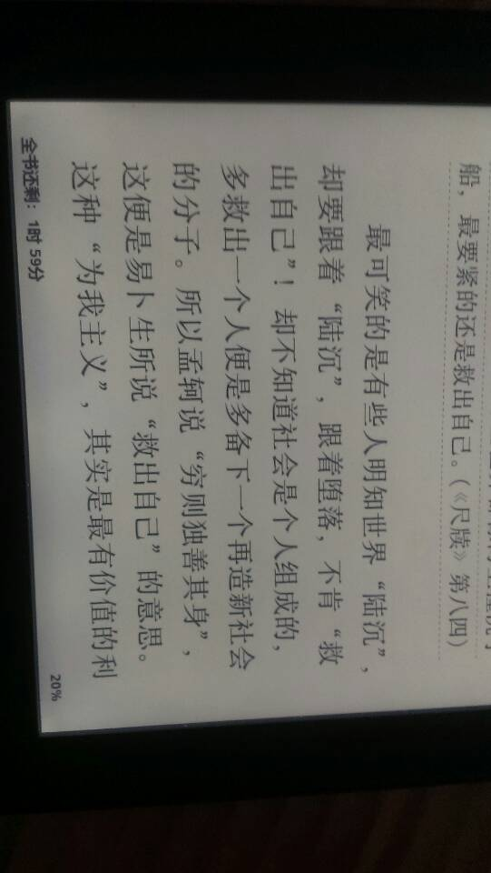

Conversation with 81184027 at Sat 23 Aug 2014 09:47:57 AM CST on 154115835 (webqq)
(09:48:25 AM) 光: 关于一群的成员完成摸底工作，并填表（群员信息登记表）反馈的有 心靈之光 _ 信望爱◢ 点燃心烛 孤香子 毛毛 zhangchu 騰藤 月月鳥飛 已经摸底尚未填表的有 千秋大梦 剩余价值 Sky 八竿子 勇者 風雲 碧荷葉 木蝴蝶 小屁屁 一笑而過啊 其中风云同学因为要担任主要的管理职务，所以请尽快把表格填好，并且发给我统一汇总登记备案。 其他成员我会继续跟进督促其填好登记表。这是完善我们群管理和组织管理的关键一步，希望各位管理小组成员在今后的工作中都能够认真地加以贯彻。 下一步的QQ群的工作重点： 1.计划由核心小组成员分管目前的5个qq群小组 第一群：77516902 心灵之光 采取制度推荐制，不开放申请入组功能，审核级别，严格 第二群：5576618 毛毛 采取制度申请入组，可以吸收出于好奇了解的人群加入，要注意识别邪教分子，以防其对我们产生摸底、干扰、破化，审核级别，中等 第三群：53290137 风云 采取制度申请入组，可以吸收出于好奇了解的人群加入，要注意识别邪教分子，以防其对我们产生摸底、干扰、破化，审核级别，中等。特别注意三群的人员复杂，邪教分子隐藏其中，尤其要进行暗里识别，等获得群管理权限，一举全歼之。 第四群：37278678 孤香子 采取制度申请入组，可以吸收出于好奇了解的人群加入，要注意识别邪教分子，以防其对我们产生摸底、干扰、破化，审核级别，中等 第五群：59863473 信望爱 采取制度申请入组，可以吸收出于好奇了解的人群加入，要注意识别邪教分子，以防其对我们产生摸底、干扰、破化，审核级别，中等 2.群管理员要做的工作 摸底，完成群员登记表，认真核查每一个群员的来意，和其对组织的作用。定期合并汇总。 案例讨论，组织人员以小组为单位主持并领导部分核心成员进行案例研讨，通过google群组，泛学堂语音课堂平台进行逐个的案例讨论，并将讨论的结果安排整理汇总为可参考的方案，形成初步的参考案例库。并选取有代表性的案例提交到blog上，进行对社会的反邪全能神的有力补充。并且把每一次讨论的语音课程全程录制。并上传到服务器上形成统一编号，统一归档。 督导，组织并且安排小组成员相应的具体工作，配合核心小组成员共同完成整体规划中的具体任务。 考核，对群员的实际工作进行必要的考核，对于有贡献的群员实行必要的奖励，比如推荐更重要的岗位予以担任。 推荐，对于优秀的群员，经过认真的考核通过，可以推荐加入第一群，并让其在组织中担任的岗位 3.一群小组成员的工作 担任具体的组织内的岗位工作，参见规划图表（详图） 相关工作细节，将进一步讨论。
(09:48:43 AM) 光: ----------------------------关于Google群组（心灵之光）部分的进展和下一步的工作重点-------------------------------- 目前核心小组成员均已入住google群组。 Google群组的选择理由： 1. 安全性，为什么不选择自建服务器搭建bbs平台，考虑到服务器的安全维护问题，自建服务器意味很多安全漏洞需要自己来解决，以目前的组织经济实力而言，采取自建bbs的方案是不智的。Google的技术实力毋庸置疑，我们只要很好的利用起来，专注的做我们的事情把安全问题交给google来做，我们才会把工作做得更好，更快的实现我们的目标。 2. 可靠性，google的技术是最好的保证 3. 成熟性，google的技术很成熟，有很多案例证明8000人的组织都可以很高效利用这个平台。 4. 不限制容量。团队人数不限（根据我们组织可能发展到的规模来看，它的上限超过了我们的需求），而且有100M的群文件空间可以被用于上传文字性资料（pdf文档，doc文档） 5. 容易维护，经过简单的培训可以轻松解决群成员管理问题 6. 容易使用，很容易掌握。 目前存在的问题： 1. 推广的难度，国内的使用习惯问题，国内习惯用百度，实际上百度是受到中国法律约束的，我曾经尝试在百度上做全能神资料的补充，结果被屏蔽了。所以百度等国内运营商都不是很好的服务选择对象，因为我们的内容有一定的政治敏感性，我们需要的是一个国际化的平台，所以选择google这样一个飞地。国内习惯使用qq，但是qq最大只能到100上限，对于我们日益增长的需求来说，发展到一定阶段，我们不得不受到他的限制而做出调整，所以我们宁可之前多做一些推广普及工作，也不要没有提前预估到可能会存在的问题。 2. 使用的上手难度，新手对于google界面的不熟悉。 3. 英文操作界面，通过金山词霸和详细的说明文档帮助大家逐步使用google群组，一旦真正发现了其的价值，相信欲罢不能，乐在其中了。 4. 用户在选择油箱上的潜在问题，这是一个使用了google八年多的人的经验之谈。希望大家认真吸取，尽量采用gmail帐号。 特别注意，信望爱同学，需要检查一下您的油箱，是否有一封来自google的验证邮件，如果没有激活，注册还是无效的。 关于使用方面的问题，请大家多多使用多多体会，又问题多多讨论，这样才能在以后的工作中帮助其他组员成长起来，谢谢！ 以解决的问题： 1. 用户审核 2. 论坛设置 3. 文件置顶 4. 参考资料的补充 发展方向： 案例讨论区 工作重点： Google群组的人员核查。（参考qq群组） 维护群组，删除一些不必要的帖子。保持群组的整洁一致性 ----------------------------关于BLOG部分的计划-------------------------------- 在google群组案例区和泛学堂实际语音讨论中的经典问题和相应的解决方法，进行整理再加工，并定期发布到blog上对社会进行宣传，扩大我们的社会影响力。争取更多的人的支持。 组织扩大计划：成立8人领导小组，带领27人的团队（1群），带动100人的QQ群成员（2，3，4，5群）,进而成长起有350人活跃参与的google群组案例讨论区，保证1500人的blog订阅。 -------------------------------其他补充性说明---------------------------------------------- 核心小组成员之间的内部邮件沟通 QQ群的内部自建工作，可以利用QQ群的群邮件定期发布一些信息。（前提，群员信息的充分了解的前提下。） 泛学堂的利用，案例讨论语音区，定期核心小组成员开会，商讨下一个阶段的主要任务工作，对上一阶段的工作进行必要的回顾和总结。 --------------------------------核心小组成员分别的述职报告-------------------------- 以下请各位核心小组成员进行必要的自我组织，谢谢 ------------------------------------注意说明------------------------------------------------------ 请大家在每次定期会议上提前准备好各自的工作报告，以便开会的时候能够节约时间，且言之有物。保证2小时的会议后，我们能够解决一些具体问题，明确一些具体认识。能够每一个阶段每一个阶段的推进整个组织。切记，严禁负责的态度来做每一件事情。 --------------------------------补充通知--------------------------------------------------- 关于语音团队测试，上次2009年2月10日晚8点30分，实际开始时间为8点50分。参与人毛毛、信望爱、风云、心灵之光。孤香子（缺席）。 请参加的同学，反馈一下各自的结果，学到了什么，什么还比较生疏，有什么具体问题，并把可安排的时间反馈给我，我将进一步的安排时间培训调试。 关于孤香子同学，需要再进行必要的培训，本来打算找一个服务器把上次的录像传上去，昨天传了一下午，还没有传好。今天我会抽时间再试试看。 此外有需要重听的同学可以提出申请。安排出时间，进行第二次团队语音测试和相应功能的学习。上次风云因为麦克问题没有完全的参与进来，这次建议可以再参加一次。具体时间可以通知我，我来进行安排。信不知道那边的具体情况如何，请及时予以反馈。毛毛15号之前忙搬家的事情，15号之前的活动不予以安排。 OK，罗罗嗦嗦说了这么多，希望大家能反馈给我具体的内容和建议，预祝我们成功拯救我们的家庭，帮助我们的受难的兄弟姐妹！ Best Wishes 心灵之光 要有光，太阳的光是不够的，必须有心灵之光。---罗曼.罗兰
(09:48:58 AM) 光: (09:46:07 AM) 光: 新加群的几个网友注意了
(09:46:23 AM) 光: 其实本群才是联盟的创始者
(09:46:31 AM) 光: 最早的反邪联盟
(09:46:41 AM) 光: 09年就有了
(09:49:21 AM) 光: 心靈之光 ~~~~~~~~~~~~~~~~~~~~~~~~~~~~~~ 要有光，太阳的光是不够的，必须有心灵之光。---罗曼.罗兰 ---------- 已转发邮件 ---------- 发件人： 心灵之光 <angelife.t@gmail.com> 日期： 2009年2月13日 下午9:36 主题： 致管理团队核心小组成员 收件人： 心灵之光管理小组公文备案处 <angelifemanage@googlegroups.com> 发件人: 心灵之光 [mailto:angelife.t@gmail.com] 发送时间: 2009年2月13日 星期五 12:11 收件人: '毛毛'; '849038375@qq.com'; '信望爱'; 'gaoy1980@126.com' 抄送: 'angelife.t@gmail.com' 主题: 致管理团队核心小组成员 大家好， 这是第一次管理核心团队小组的群体邮件讨论。主要和大家讨论的是进一步要开展的工作。由于我们的学习和工作越来越忙，为了使我们能够真正有效的沟通和交流。团队之间的密切联系是必须的。 首先我把近期的进展和其下一步的计划向大家报告一下。 ----------------------------关于QQ群部分的进展和下一步的工作重点-------------------------------- 目前我们拥有可以支配的qq群组有4个，不包括风云正在争取的三群。已经统一番号为反邪全能神第N群，统一公告。 反邪全能神聯盟 第一群：77516902 第二群：5576618 第三群：53290137 第四群：37278678 第五群：59863473 群公告（对内）为 要有光，太阳的光是不够的，必须有心中的光。---罗曼.罗兰 Google Group： https://groups.google.com/group/angelife?hl=zh-CN 群简介（对外）为 Live simply. Love generously. Care deeply. Speak kindly. Leave the rest to God 中文释义为： 简简单单的生活。 大大方方的爱。 细致入微地照顾。 和风细雨般说话。 其他的就交给上帝吧。 ---选自God’s Coffee（上帝的咖啡） 一文 https://groups.google.com/group/angelife/browse_thread/thread/ba10ba477a18204e?hl=en 关于一群的成员完成摸底工作，并填表（群员信息登记表）反馈的有 心靈之光 _ 信望爱◢ 点燃心烛 孤香子 毛毛 zhangchu 騰藤 月月鳥飛 已经摸底尚未填表的有 千秋大梦 剩余价值 Sky 八竿子 勇者 風雲 碧荷葉 木蝴蝶 小屁屁 一笑而過啊 其中风云同学因为要担任主要的管理职务，所以请尽快把表格填好，并且发给我统一汇总登记备案。 其他成员我会继续跟进督促其填好登记表。这是完善我们群管理和组织管理的关键一步，希望各位管理小组成员在今后的工作中都能够认真地加以贯彻。
(09:50:00 AM) 光: 11年就推出了退教参考手册
(09:50:19 AM) 光: http://angelife.org/index.html
(09:51:00 AM) 光: https://github.com/angelife/angelife.github.com
(09:51:05 AM) 光: 第三方数据
(09:51:08 AM) 光: 三年前
(09:51:14 AM) 光: 没必要骗你们的
(09:51:32 AM) 光: 而联盟现在的只是12年6月才出来了
(09:51:53 AM) 光: 谁真谁假还用说么
(09:52:00 AM) 光: :face13:
(09:53:10 AM) 光: 爱凑热闹的人往往被人愚弄
(09:56:21 AM) 福建-福州&水浒: :D
(09:53:19 AM) 光: :face14:
(09:58:48 AM) 往事随风: 这是个什么群
(09:55:44 AM) 光: 退教的
(09:59:09 AM) 往事随风: 全能神
(09:56:01 AM) 光: 本人09年创立反邪全能神联盟
(09:59:24 AM) 骑着狼放羊: 我可不是全能神
(09:56:16 AM) 光: 而不是灭神说的12年才有
(09:59:31 AM) 往事随风: 那你是什么
(09:56:32 AM) 光: 11年写的退教参考手册
(09:56:43 AM) 光: 13年总结了退教基本建议
(10:00:05 AM) 往事随风: 退教还用看手册？
(10:00:21 AM) 骑着狼放羊: 如果是全能神的群 我退出去了
(09:57:13 AM) 光: 退教基本建议
和则自愈（总纲）
不对立，多关心（基本前提）
合理安排时间（一）
管好财物（二）
多读书，读好书（三）
养成好习惯，积极正面人生（四）
(09:57:19 AM) 光: 你们是用百度的么
(10:00:44 AM) 2383007: 还有教材......
(09:57:39 AM) 光: 很早了
(09:57:42 AM) 光: 11年就有了
(09:58:12 AM) 光: 你们只会用百度，上当是正常的
(10:01:33 AM) 往事随风: 上什么当
(10:01:39 AM) 骑着狼放羊: 光你以前信过全能神没有
(09:58:29 AM) 光: 慢慢来吧
(09:58:52 AM) 光: 被人蛊惑的人都是这样
(09:59:01 AM) 光: 觉得自己很正义呢
(10:02:14 AM) 骑着狼放羊: 百度是假的吗
(10:02:18 AM) 往事随风: 你在蛊惑我吗
(09:59:11 AM) 光: 可以造假的么
(10:02:49 AM) 小绵羊: 心灵之光?"光"?哎，我有印象，是早几年，我刚反邪时，百度的第一手退教手册!光!好名!我想起来了!
(09:59:41 AM) 光: 也可以炒作
(10:00:18 AM) 光: 我只是个人行为
(10:00:28 AM) 光: 没有那么大的精力去自我炒作
(10:03:52 AM) 小绵羊: :强:
(10:00:50 AM) 光: :face14:
(10:04:01 AM) 骑着狼放羊: 光 听你这么一说 这以后百度还不敢相信了是吧
(10:04:02 AM) 2383007: 写书的？
(10:01:02 AM) 光: 你可以信啊
(10:01:16 AM) 光: 这个不能强求的
(10:01:28 AM) 光: :face13:
(10:04:45 AM) 福建-福州&水浒: 百度～～～三真七假
(10:05:05 AM) 福建-福州&水浒: 五五开都达不到
(10:02:23 AM) 光: 信百度就出来你们这些闹剧了
(10:05:35 AM) 骑着狼放羊: 真的假的
(10:05:45 AM) 小绵羊: 我只是个看客，旁观者清!没必要全信网传!
(10:02:47 AM) 光: 真相在细节中
(10:02:49 AM) 光: 自己观察吧
(10:03:45 AM) 光: 不过这样挺好
(10:07:02 AM) 骑着狼放羊: 这群的目的是干啥
(10:03:53 AM) 光: 灭神是不愿意宣传我的
(10:07:16 AM) 往事随风: 为什么
(10:04:06 AM) 光: 你们可以多帮我宣传一下
(10:04:09 AM) 光: 没关系的
(10:07:27 AM) 此去经年: prefect
(10:04:26 AM) 光: 说是邪教也无所谓的
(10:04:30 AM) 光: 真的
(10:04:41 AM) 光: 毕竟爱看热闹的多
(10:04:58 AM) 光: 抄袭者遇到抄袭对象
(10:05:09 AM) 光: 肯定有些谎言是说不圆满了
(10:05:25 AM) 光: 所以最好不提
(10:08:37 AM) 小绵羊: 心灵之光，退教手册，是光的杰作?我在用笔作记录的，很好，在当时来说，是第—个的，第一手的指导脱离邪教的好参考!
(10:05:39 AM) 光: :face14:
(10:09:35 AM) 小绵羊: :handclap:
(10:12:39 AM) 小绵羊: 非常感谢心灵之光，光(先生)，我当时还以为是光女仕!真假不得而知!只知道，光说话很有修养，涵养，很随和而不卖萌!反正是好!
(10:09:43 AM) 光: :face14:
(10:13:30 AM) 往事随风: 你就别在这捧臭脚了 行不行
(10:10:29 AM) 光: 没事
(10:13:48 AM) 往事随风: 马屁拍的太响了
(10:10:40 AM) 光: 你可以试试看你的观点能保持多久
(10:11:30 AM) 光: 到时候你就要反着说，或者就沉默了
(10:15:08 AM) 往事随风: 我的观点就是 一切邪教就是个狗屎
(10:12:10 AM) 光: 希望你能保持现在的这种热情
(10:12:17 AM) 光: ：）
(10:16:08 AM) 往事随风: 如果你真是反邪的 那么我支持你
(10:13:10 AM) 光: 我说真的就是真的么
(10:13:14 AM) 光: 你也太天真了
(10:16:36 AM) 往事随风: 如果你是打着反邪的幌子骗人的 那你就是个人渣
(10:13:32 AM) 光: 嗯
(10:13:34 AM) 光: 有道理
(10:13:48 AM) 光: 那么如果你一直和人渣在一起
(10:13:58 AM) 光: 是不是说明你也有人渣的倾向啊
(10:17:49 AM) 往事随风: 那么你承认了你是打着反邪的幌子了
(10:14:46 AM) 光: 我不反邪
(10:14:50 AM) 光: 我只退教
(10:14:58 AM) 光: 反邪是我09年提出的概念
(10:15:01 AM) 光: 11年就不是了
(10:15:04 AM) 光: 改为退教
(10:15:08 AM) 光: 好么
(10:18:30 AM) 往事随风: 这么说你认为邪教也是正规的教派了
(10:15:34 AM) 光: 不跟你说了
(10:15:44 AM) 光: 你有时间自己看看网页上的内容
(10:15:46 AM) 光: 再说吧
(10:15:47 AM) 光: 好么
(10:16:05 AM) 光: 如果不愿意看
(10:16:09 AM) 光: 就在这里呆着
(10:16:15 AM) 光: 看我怎么退教的
(10:16:20 AM) 光: 欢迎监督啊
(10:19:46 AM) 往事随风: 拭目以待
(10:16:38 AM) 光: 嗯
(10:16:49 AM) 光: 休息一下吧
(10:16:56 AM) 光: 折腾的也够累了
(10:27:22 AM) 2383007: 你的意思你现在是全能教徒
(10:29:52 AM) 小绵羊: 全能也有好的一面，只不过很多人被它好的一面蒙敝了双眼，以至看不到它恶的另一面!
(10:30:14 AM) 往事随风: 全能哪里有好的一面
(10:31:02 AM) 往事随风: 让人抛家弃子 家财散尽 家庭支离破碎这是好的一面？
(10:31:34 AM) 2383007: 扯淡 好还弄的别人家破人亡
(10:32:00 AM) 2383007: 这就是你所谓的好？
(10:32:23 AM) 2383007: 你家没有信的吧 还是都信了
(10:32:55 AM) 往事随风: 这不反问啊
(10:33:12 AM) 往事随风: 要是好 还用偷偷摸摸
(10:33:20 AM) 小绵羊: 每—种邪教—开始都是宣扬好(善)的，全能也不例外!
(10:34:32 AM) 2383007: 然后开始变质 为了达到自己的目的不则手段 六亲不认 独来独往 人不费了
(10:34:46 AM) 2383007: 好在哪？
(10:34:48 AM) 小绵羊: 如若一开始就宣扬要奉献，要过灵床，我相信，没人去信的!
(10:35:03 AM) 往事随风: 废话 上来就让你反共产党、抛家弃子谁还信啊
(10:35:26 AM) 反邪★石家庄: 温水煮青蛙
(10:35:37 AM) 2383007: 说的不都是废话
(10:36:39 AM) 往事随风: 这里到底信的是什么 全能神 三赎基督 蒙头教 到底哪一个
(10:34:25 AM) 光: （例如我本人是学计算机信息管理专业的，喜欢看书，对心理学，宗教，历史，社会学都非常感兴趣，懂技术，由于家人在2001年左右被亲人引入东方闪电成为信徒，之后对这个问题就非常的关注，在09年初正式创立反邪全能神联盟，之后因为很多问题退出，学佛（2009年10月~2011年10月）2011年11月回来重新建立退教咨询平台，编写整理退教参考手册angelife.org~至今，现在的这个平台是对于退教参考手册的再编写，希望能够更加完善具体细节，在助人退教方面贡献一份力量，计划采用版权为 CC BY-NC-ND 4.0授权Image）
(10:34:34 AM) 光: 这是本人的简单自我介绍
(10:34:36 AM) 光: 好么
(10:36:01 AM) 光: 你听哪个说这里是邪教群的？
(10:36:09 AM) 光: 一听你就信啊
(10:39:29 AM) 我会一直等着你、: 有女的么单身的
(10:39:31 AM) 箭客: 光，你说我们离家出走的亲人还有回来的可能吗，你接触的早，说说？
(10:36:22 AM) 光: 脑子在哪里？
(10:36:33 AM) 光: 人都是自己回来的多
(10:39:54 AM) 反邪★石家庄: 回来是肯定的
(10:36:48 AM) 光: 其实我11年就建议不对立
(10:40:09 AM) 反邪★石家庄: 回来也是邪教安排的
(10:40:16 AM) 箭客: 怎么一个月电话也没有啊
(10:40:18 AM) 反邪★石家庄: 那是做安抚工作
(10:37:08 AM) 光: 如果按照不对立，多关心的原则，离家出走可以避免
(10:40:27 AM) 2383007: 好吧 怎么解决 让他妈退教最实际
(10:37:19 AM) 光: 但是那时候你们这些人不听啊
(10:37:31 AM) 光: 喊打喊杀的
(10:37:40 AM) 光: 离家出走率高也是没办法的事情
(10:41:10 AM) 2383007: 整个人全变了
(10:41:18 AM) 反邪★石家庄: 有时候温和态度真的不行
(10:41:19 AM) 潮哥: [图片]【倒退的历史】昨天香港泛民派人士面见全国人大基本法委员会主任李飞。工党何秀兰带了一份1944年的【新华日报】给李飞看,说:贵党不是早就承诺给人民一人一票,允许政党竞争、自由提名吗?新华日报当年不是大力赞美美国和英国的民主吗?不是骂国民党一党专政吗?不是说贵党执政后决不学国民党一党独裁吗?
(10:38:12 AM) 光: 在这个基础上搞出来一个“联盟”也是没办法的事情
(10:38:37 AM) 光: 似乎什么亲情感化啊
(10:41:57 AM) 小绵羊: 不对立，多关心(爱)!这是参考手册里的!好，我记起来了!
(10:38:47 AM) 光: 都是13年很后面才有了
(10:39:19 AM) 光: 但是你们对立了那么久，才想到对立有问题
(10:39:28 AM) 光: 这个结怎么化解
(10:39:32 AM) 光: 化解也需要时间的
(10:39:56 AM) 光: 离家出走问题，是自己搞出来的
(10:40:00 AM) 光: 怪谁？
(10:43:19 AM) 小绵羊: :)
(10:40:18 AM) 光: :face14:
(10:43:34 AM) 箭客: 光你从什么方面说离家的会自己回来呢
(10:43:44 AM) 箭客: 有什么根据
(10:40:36 AM) 光: 离家出走肯定是自己回来的多了
(10:43:47 AM) 反邪★石家庄: 不会自己回来
(10:40:44 AM) 光: 不然你去找
(10:40:52 AM) 光: 茫茫人海你怎么找
(10:44:07 AM) 2383007: 整点有用的
(10:44:08 AM) 反邪★石家庄: 找不到，回来也是邪教安排的
(10:44:10 AM) 小绵羊: 应该视具体的人，用具体的办法!
(10:41:19 AM) 光: 有用的就是读书啊
(10:41:37 AM) 光: 头脑空空，爱凑热闹
(10:41:42 AM) 光: 不上当也难
(10:45:05 AM) 小绵羊: 效果，才是硬道理!
(10:45:28 AM) 箭客: 目前只能等了
(10:42:23 AM) 光: 一个人从愚蠢到聪明
(10:45:36 AM) 箭客: 什么都不干
(10:42:28 AM) 光: 不读书怎么行
(10:45:40 AM) 2383007: 全能教的目的是什么
(10:46:13 AM) 箭客: 现在家人都找不到还有心思读书吗
(10:46:22 AM) 小绵羊: 不能比顾客更聪明，同样适用于退教!
(10:46:24 AM) 箭客: 我们又不是冷血动物
(10:43:17 AM) 光: 那你等家人回来再读书
(10:43:31 AM) 光: 估计那时候你也没心思读书
(10:46:44 AM) 箭客: 读什么书啊
(10:43:36 AM) 光: 那么我问你啊
(10:43:42 AM) 光: 你什么时候才有心思读书呢
(10:47:05 AM) 箭客: 介绍几本好书给我吧
(10:44:03 AM) 光: 群共享里面
(10:47:14 AM) 箭客: 我平时也喜欢看书的
(10:44:07 AM) 光: 往下翻
(10:44:21 AM) 光: 有一个关于监狱犯人的心理疏导的书
(10:44:24 AM) 光: 可以先看看
(10:44:30 AM) 光: 了解一个基本概念
(10:44:43 AM) 光: 应该是12年分享的
(10:44:46 AM) 光: 你往下翻
(10:48:10 AM) 小绵羊: 心理学!基础!
(10:45:05 AM) 光: 嗯
(10:48:27 AM) 小绵羊: 入门!
(10:48:43 AM) 箭客: 看了你书的人，家人回来的可能性有增加吗
(10:45:53 AM) 光: 我不卖符咒
(10:46:00 AM) 光: 不保你平安
(10:49:12 AM) 小绵羊: :)
(10:49:50 AM) 反邪★石家庄: 哈哈
(10:49:55 AM) 小绵羊: 成事在天，败事在人!
(10:49:57 AM) 2383007: 你说大学生也信 是因为什么
(10:46:57 AM) 光: 你说的应该有两种
(10:50:11 AM) 2383007: 他妈读的书少吗
(10:50:12 AM) 反邪★石家庄: 大环境造成的
(10:47:05 AM) 光: 一种是神二代
(10:47:14 AM) 光: 还有一种是神二代的朋友
(10:50:26 AM) 2383007: 神二代是什么懂
(10:47:18 AM) 光: 同学
(10:47:30 AM) 光: 信徒的下一代
(10:47:39 AM) 光: 这个邪教已经快20年了
(10:47:48 AM) 光: 你如果20岁
(10:51:04 AM) 箭客: 这个说法我支持光的说法
(10:47:59 AM) 光: 嗯
(10:51:11 AM) 小绵羊: 没文化，真可怕!并不是说没文凭，真可怕!
(10:51:24 AM) 箭客: 信狗神的二代还真不少
(10:48:23 AM) 光: 还好
(10:48:29 AM) 光: 没有出来三代之前
(10:48:33 AM) 光: 问题还好办
(10:51:49 AM) 箭客: 这个东西不灭
(10:48:41 AM) 光: 如果除了三代四代
(10:51:59 AM) 箭客: 害死很多人
(10:48:49 AM) 光: 那么就慢慢的和摩门教一样了
(10:49:00 AM) 光: 会正规化的
(10:49:05 AM) 光: 合法化的
(10:52:41 AM) 小绵羊: 上帝的爱即是性爱?
(10:53:14 AM) 箭客: 建立以神为最高权利的国家吧
(10:50:10 AM) 光: 不会
(10:53:30 AM) 小绵羊: :wipe:
(10:50:23 AM) 光: 你太小看党了
(10:50:40 AM) 光: 党有8千万的党员
(10:50:46 AM) 光: 邪教才多少
(10:50:52 AM) 光: 零头都不到
(10:50:58 AM) 光: 神的国度有点遥远
(10:51:03 AM) 光: 敛财差不多
(10:54:21 AM) 箭客: 怎么就灭不了呢
(10:54:23 AM) 福建-福州&水浒: :d
(10:54:31 AM) 2383007: 你到底想宣扬什么
(10:51:26 AM) 光: 你觉得什么被灭掉过
(10:51:30 AM) 光: 你讨厌苍蝇
(10:54:45 AM) 箭客: 强大的国家怎么就没有办法啊
(10:51:40 AM) 光: 灭苍蝇的方法也很多啊
(10:51:47 AM) 光: 但是苍蝇有没有灭掉过呢
(10:55:08 AM) 箭客: 也是
(10:51:58 AM) 光: 四害里面哪个被你灭掉了
(10:52:15 AM) 光: 不可以说人不聪明啊
(10:52:18 AM) 光: 方法很多
(10:55:48 AM) 箭客: 这种东西就像毒品
(10:52:49 AM) 光: 与其灭邪教
(10:52:52 AM) 光: 不如灭无知
(10:52:59 AM) 光: 没有无知就没有邪教
(10:53:05 AM) 光: 灭无知靠读书
(10:53:08 AM) 光: 不靠百度
(10:53:13 AM) 光: 好吗
(10:57:02 AM) 福建-福州&水浒: 强大的国家怎么就没有办法啊
(10:53:55 AM) 光:
任何时候不要随大流
现在的年轻人，条件很好，机遇也不差。这个机遇就是大部分人不读书、不用功，上个网、看个电影啊，就跟我们＂文革＂时一样，大部分人不读书或想读也读不了。现在包括学习很好的学生，用功程度也远不如过去，所以你只要花费很少的精力就能超越别人。还是和＂文革＂时一样，并不是你有多聪明，但你读书了就可以考上大学。＂文革＂给我的启发之一就是，任何时候不要随大流，毛主席时期如此，现在也如此。——冯象
(10:57:06 AM) 福建-福州&水浒: :p
(10:54:28 AM) 光: 头脑空空，还爱凑热闹
(10:54:33 AM) 光: 你不上当谁上当呢
(10:57:53 AM) 福建-福州&水浒: 透露你个秘密给你邪教6月22出工作安排，公安6月16部署打击～～
(10:54:46 AM) 光: 即使人多，也是物以类聚，都是不读书的人啊
(10:55:21 AM) 光: 你从不读书的人群中去寻找智慧么
(10:58:36 AM) 福建-福州&水浒: 邪教是不是应对的比公安快:p
(10:55:57 AM) 光: :face14:
(11:00:36 AM) 2383007: 你现在信佛？
(11:00:41 AM) 骑着狼放羊: 你说灭无知 无知不犯罪你敢灭吗，
(10:57:53 AM) 光: http://angelife.org/%E5%90%8D%E4%BA%BA%E5%90%8D%E8%A8%80.html
(10:57:59 AM) 光: 你自己的事情
(11:01:10 AM) 2383007: 任何人都有软弱的一面
(10:58:04 AM) 光: 要我帮你么
(10:58:11 AM) 光: 我的价值观在这里
(10:58:13 AM) 光: 你自己看了
(10:58:28 AM) 光: 也是11年就放在网上了
(11:02:55 AM) 福建-福州&水浒: 
(11:04:13 AM) 福建-福州&水浒: 先救出自己，就比如你辩论不过信徒，为何？她看的书比你对，更可怕的是你问的什么问题，对方在脑袋中给你预备了～
(11:04:40 AM) 福建-福州&水浒: 纠正一下～对方看的书多
(11:01:48 AM) 光: 嗯
(11:10:26 AM) 951505015: 嗨
(11:10:34 AM) 小绵羊: 光先生的心路历程(拯救，退教经历)，和我的差不多，我只是没他知识丰富!
(11:08:04 AM) 光: 嗯
(11:11:15 AM) 951505015: 什么经历啊，有退教的嘛？
(11:11:16 AM) 小绵羊: ;-)
(11:08:13 AM) 光: :face14:
(11:08:32 AM) 光: 退教基本建议
和则自愈（总纲）
不对立，多关心（基本前提）
合理安排时间（一）
管好财物（二）
多读书，读好书（三）
养成好习惯，积极正面人生（四）
(11:11:49 AM) 福建-福州&水浒: :奋斗:
(11:11:51 AM) 951505015: 那个反联盟怎么不行了啊
(11:08:49 AM) 光: (11:11:15 AM) 951505015: 什么经历啊，有退教的嘛？ //就是这个了
(11:12:40 AM) 951505015: 干嘛的！
(11:09:32 AM) 光: 哪个不晓得，我和你一样充满好奇
(11:09:52 AM) 光: 我么
(11:09:55 AM) 光: 帮人退教的
(11:10:15 AM) 光: 找人这个事情新版也会考虑
(11:10:20 AM) 光: 目前不提供这个服务
(11:14:00 AM) 951505015: 这是什么群
(11:10:57 AM) 光: 退教群
(11:14:18 AM) 951505015: 什么教
(11:11:08 AM) 光: http://angelife.org/
(11:11:11 AM) 光: 你可以看看这里
(11:15:09 AM) 2383007: 有多少成功的案例
(11:12:05 AM) 光: 哦
(11:12:12 AM) 光: 你在联盟看得到几个
(11:12:18 AM) 光: 其实我是我帮他们咨询出来的
(11:12:27 AM) 光: 比如哪个华山论剑
(11:13:07 AM) 光: 当然还有几个我就不说了
(11:16:22 AM) 2383007: 现在根本就找不到人
(11:16:34 AM) 2383007: 有什么想法也没用
(11:13:35 AM) 光: 找不到人正常啊
(11:16:51 AM) 小绵羊: 他(光)说的，喊打，喊杀，只会更多的赶家人离家出走，杳无音讯!现在正有家人信邪的朋友们注意了:不对立，多关心，好退教!喊打喊杀，只有离家出走。甚至离婚，远走，毫无音讯!切记呀，朋友们!
(11:13:48 AM) 光: 嗯
(11:14:12 AM) 光: 你要找人 你要线索才行
(11:14:15 AM) 光: 你有什么线索
(11:14:18 AM) 光: 好好想想
(11:17:34 AM) 2383007: 一点痕迹没有
(11:14:38 AM) 光: 第几次离家出走了
(11:17:53 AM) 2383007: 1
(11:14:47 AM) 光: 信了多久
(11:18:04 AM) 2383007: 2年
(11:14:56 AM) 光: 什么情况，年纪，教育背景
(11:15:09 AM) 光: 因何入教
(11:18:20 AM) 2383007: 25 大专
(11:15:17 AM) 光: 性别
(11:15:35 AM) 光: 离家出走多久
(11:15:36 AM) lost message from #205394 to #205394
(11:18:46 AM) 2383007: 信了以后整个人都变了
(11:18:54 AM) 2383007: 7天
(11:15:56 AM) 光: 相貌程序
(11:16:04 AM) 光: 相貌 优劣
(11:16:16 AM) 光: 性别
(11:19:34 AM) 2383007: 还好
(11:19:38 AM) 2383007: 女
(11:16:30 AM) 光: 嗯
(11:16:43 AM) 光: 信教原因
(11:19:58 AM) 2383007: 和这些都有关吗
(11:16:52 AM) 光: 有啊
(11:20:03 AM) 2383007: 不明
(11:17:01 AM) 光: 你和她的关系
(11:20:17 AM) 2383007: 应该是人生经历
(11:20:36 AM) 2383007: 小时家里有变故 这算吗
(11:20:38 AM) 951505015: 大专怎么还信额
(11:20:42 AM) 2383007: 夫妻
(11:17:36 AM) 光: ok
(11:20:58 AM) 2383007: 什么情况
(11:17:50 AM) 光: 如果没有人劫色
(11:17:56 AM) 光: 应该会回来的
(11:18:14 AM) 光: 第一次而已
(11:21:27 AM) 此去经年: why
(11:21:28 AM) 2383007: 劫色？
(11:18:22 AM) 光: 人不会太糊涂吧
(11:21:36 AM) 此去经年: 这么笃定
(11:18:40 AM) 光: 离家出走N次的例子大把
(11:18:47 AM) 光: 还不是在家现在
(11:21:59 AM) 2383007: 入教后人变了
(11:19:00 AM) 光: 一次还不会有太大问题
(11:22:24 AM) 2383007: 原则应该不会变吧
(11:19:15 AM) 光: 就怕被人劫色
(11:22:33 AM) 2383007: ...
(11:22:34 AM) 紫罗兰: 感觉光先生看待这种问题就跟我们看1+1=2那样
(11:19:28 AM) 光: 年纪轻
(11:22:41 AM) 小绵羊: 讲实话，我更为一些人惋惜，他们正在对信邪的家人另眼看待，又打又骂，多下流就骂多难听，也包括我现有的一些亲人!他们或许比信邪的亲人更"没文化，真可怕"!
(11:19:50 AM) 光: 嗯
(11:23:13 AM) 此去经年: 劫色劫色...
(11:20:04 AM) 光: 毕竟一个人在外
(11:20:09 AM) 光: 还是女孩子
(11:20:13 AM) 光: 这个很难保证
(11:20:29 AM) 光: 成年妇女，老年妇女
(11:20:32 AM) 光: 没有这个问题
(11:23:56 AM) 2383007: 他妈出去是干什么
(11:24:00 AM) 2383007: 他们
(11:20:55 AM) 光: 洗脑
(11:20:58 AM) 光: 加深信仰
(11:24:10 AM) 小绵羊: 年轻美貌难说!
(11:21:23 AM) 光: 为进一步敛财做铺垫
(11:24:35 AM) 2383007: 句了解说是在躲
(11:24:51 AM) 2383007: 我妈感情很深
(11:21:47 AM) 光: 那是一种说法
(11:25:02 AM) 2383007: 我们
(11:21:54 AM) 光: 其实是以招远案件
(11:21:58 AM) 光: 为借口
(11:25:11 AM) 2383007: 没有影响吗
(11:22:04 AM) 光: 拉这些人出去集中洗脑
(11:22:10 AM) 光: 洗脑集中效果非常好
(11:22:51 AM) 光: 而且成本非常低
(11:26:42 AM) 小绵羊: —个受害者可以带出许许多多的受害者!:
(11:23:43 AM) 光: 嗯
(11:27:46 AM) 2383007: 一个人的思想很容易被改变吗
(11:24:43 AM) 光: 不容易
(11:27:54 AM) 小绵羊: 叫真理见证!交通讲道!
(11:24:54 AM) 光: 涉世未深的人
(11:25:00 AM) 光: 容易被诱惑和误导
(11:28:26 AM) 小绵羊: 环境出人!
(11:25:29 AM) 光: 这个世界上有很多欺骗不是么
(11:29:34 AM) 箭客: 光你说劫色后就不会回来了吗
(11:29:45 AM) 2383007: 人的弱点太多了
(11:30:10 AM) 箭客: 这是为什么啊
(11:27:02 AM) 光: 看个人心理素质
(11:27:12 AM) 光: 素质差的会崩溃，自杀
(11:30:33 AM) 箭客: 为什么啊
(11:27:30 AM) 光: 想不开啊
(11:30:46 AM) 箭客: 难道是以强迫的手段吗
(11:27:51 AM) 光: 具体看人
(11:31:01 AM) 箭客: 不是为了神吗
(11:31:10 AM) 箭客: 为什么还想不通呢
(11:28:04 AM) 光: 有的事情对某些人不是事
(11:28:10 AM) 光: 对另外一些人是天大的事情
(11:28:15 AM) 光: 人是复杂的
(11:31:29 AM) 箭客: 是的
(11:28:20 AM) 光: 不能一概而论
(11:31:53 AM) 箭客: 你给我分析一下我老婆的情况怎么样
(11:28:45 AM) 光: 比如说中国这么多人
(11:31:57 AM) 此去经年: 洁身自爱
(11:28:50 AM) 光: 信教的还是少数
(11:29:13 AM) 光: 说明还是有相当一部分人
(11:29:17 AM) 光: 拒绝了这种邪教的
(11:29:30 AM) 光: 不然我们应该早就是神的国度了
(11:29:31 AM) 光: ok
(11:32:52 AM) 2383007: 是没有得到一定好处吧
(11:29:53 AM) 光: 具体不晓得
(11:33:10 AM) 2383007: 有好处都信了
(11:30:10 AM) 光: 也许吧
(11:30:49 AM) 光: (11:31:53 AM) 箭客: 你给我分析一下我老婆的情况怎么样 //你老婆是什么问题啊
(11:31:49 AM) 光: (11:14:38 AM) 光: 第几次离家出走了 信了多久 什么情况，年纪，教育背景 因何入教 离家出走多久
(11:36:33 AM) 箭客: 38岁，信仰程度6年，期间有报警一次，人很正派，我们夫妻长期分居，她心灵空虚，自卑感强，没有社会认同感，夫妻矛盾较多
(11:33:56 AM) 光: 教育背景 因何入教 离家出走多久
(11:34:03 AM) 光: 第几次离家出走了
(11:39:02 AM) 小绵羊: 长期分居，跟离婚差不多?
(11:39:05 AM) 2383007: 全能教里 被威胁强迫的案例多吗
(11:36:11 AM) 光: (11:39:05 AM) 2383007: 全能教里 被威胁强迫的案例多吗 //有啊
(11:36:13 AM) 光: 不少
(11:36:32 AM) 光: 河南性奴案你知道么
(11:40:02 AM) 小绵羊: 变相威胁强迫，(暗示)恐吓!
(11:40:20 AM) 箭客: 小学文化，为了所谓的得平安，为了孩子不生病自己没有灾难，第一次离家十天主动联系我回家，在家里待五天后因为我在外面打牌一天没回家，留纸条说我没改，不要我跟孩子了，说去深圳，叫我不要找她了。目前第二次出走以20多天
(11:40:40 AM) 2383007: 是全能教干的？
(11:37:41 AM) 光: http://baike.baidu.com/view/6527588.htm
(11:37:45 AM) 光: 不是原理
(11:37:51 AM) 光: 让你看原理
(11:38:20 AM) 光: (11:40:20 AM) 箭客: 小学文化，为了所谓的得平安，为了孩子不生病自己没有灾难，第一次离家十天主动联系我回家，在家里待五天后因为我在外面打牌一天没回家，留纸条说我没改，不要我跟孩子了，说去深圳，叫我不要找她了。目前第二次出走以20多天 //嗯
(11:38:23 AM) 光: 等一等吧
(11:39:37 AM) 光: http://baike.baidu.com/view/482709.htm?fromtitle=%E6%96%AF%E5%BE%B7%E5%93%A5%E5%B0%94%E6%91%A9%E7%BB%BC%E5%90%88%E7%97%87&fromid=120673&type=syn
(11:42:55 AM) 箭客: 你有什么高见吗
(11:39:46 AM) 光: 你们喜欢百度，就都给你们百度
(11:40:11 AM) 光: 性奴案件背后是这么一个心理学原理
(11:40:24 AM) 光: 斯德哥尔摩综合征
(11:40:28 AM) 光: 可以理解一下
(11:43:56 AM) 小绵羊: 你该与她建立感情，过夫妻姓爱生活，她—回家，你却打牌一天不回，你太不懂女人心了!她渴望爱，关爱，被爱，有人关注她，也包括性爱!0k
(11:40:51 AM) 光: (11:42:55 AM) 箭客: 你有什么高见吗 //只是由于招远案件引起的召集性离家出走
(11:41:25 AM) 光: 人出问题（意外死亡，人间蒸发）是小概率的问题
(11:44:37 AM) 箭客: 不全是
(11:41:35 AM) 光: 嗯
(11:41:44 AM) 光: 你还有什么补充的
(11:45:35 AM) 箭客: 她这次回来一个是想小孩，第二个是我骗她说我也跟你一起信
(11:42:46 AM) 光: 嗯
(11:46:07 AM) 箭客: 发现我没有跟她信的意思，她才对我绝望
(11:42:58 AM) 光: 第一次回家是什么时候的事情了
(11:46:10 AM) 小绵羊: ?!
(11:46:25 AM) 箭客: 20多天前
(11:43:27 AM) 光: 这样啊
(11:46:49 AM) 箭客: 后面8月2号又出走了
(11:43:41 AM) 光: 那么就是说
(11:43:51 AM) 光: 之前信6年没有离家出走过么
(11:47:16 AM) 箭客: 没有
(11:47:22 AM) 箭客: 舍不得小孩吧
(11:44:16 AM) 光: 哦
(11:44:19 AM) 光: 小孩多大
(11:47:37 AM) 箭客: 八岁
(11:44:32 AM) 光: 嗯
(11:44:58 AM) 光: 第一次回来之后
(11:45:11 AM) 光: 你有了解过她大概在什么地方么
(11:45:26 AM) 光: 出去多久然后回来的
(11:45:41 AM) 光: 可以判断一下离家的距离
(11:48:57 AM) 小绵羊: 忠告:保管好财物!
(11:48:59 AM) 箭客: 第一次出走回家是在深圳
(11:46:03 AM) 光: 离开到回来的时间
(11:46:06 AM) 光: 第一次
(11:49:47 AM) 箭客: 离开8天后打电话给我我劝他回来的
(11:49:54 AM) 箭客: 主要是她想孩子
(11:46:44 AM) 光: 8天
(11:46:51 AM) 光: 嗯
(11:46:56 AM) 光: 那么就是在深圳了
(11:47:02 AM) 光: 8天能走多远
(11:47:10 AM) 光: 多久回来的
(11:50:23 AM) 箭客: 就在深圳
(11:47:15 AM) 光: 电话之后多久
(11:50:31 AM) 箭客: 第二天
(11:47:34 AM) 光: 精确到小时
(11:50:44 AM) 箭客: 我去车站接她的
(11:50:50 AM) 2383007: 他妈出走一般都是坐客车吧
(11:51:18 AM) 2383007: 他们
(11:51:19 AM) 箭客: 我认识开深圳车的司机
(11:48:20 AM) 光: 你算一下
(11:51:33 AM) 箭客: 确实是从深圳回来的
(11:48:25 AM) 光: 电话之后
(11:48:36 AM) 光: 大概多少时间到你家的
(11:52:05 AM) 箭客: 30个小时吧
(11:49:01 AM) 光: 通过这个时间可以估计路程
(11:49:15 AM) 光: 打电话是晚上还是怎样
(11:52:32 AM) 箭客: 1200多公里
(11:52:37 AM) 箭客: 晚上八点多
(11:49:39 AM) 光: 那么扣掉睡觉
(11:52:50 AM) 箭客: 在路上18个小时
(11:49:41 AM) 光: 8个小时
(11:49:44 AM) 光: 嗯
(11:49:48 AM) 光: 18个小时
(11:49:56 AM) 光: 你算一下大概在什么地方
(11:50:08 AM) 光: 既然你认识司机
(11:53:25 AM) 箭客: 你的意思是怀疑她不是从深圳吗
(11:53:34 AM) 箭客: 回家的
(11:50:28 AM) 光: 18个小时车子能开多远
(11:53:46 AM) 箭客: 就在深圳
(11:50:38 AM) 光: 而且还是公车
(11:54:00 AM) 箭客: 百分之百
(11:50:55 AM) 光: 而且方向也有了
(11:51:06 AM) 光: 车有线路的
(11:51:10 AM) 光: 就那么几个站
(11:51:18 AM) 光: 然后你联系当地的公安就可以了
(11:54:30 AM) 箭客: 我去深圳找了
(11:51:22 AM) 光: 注意一下
(11:51:27 AM) 光: 用脑子
(11:51:34 AM) 光: 这就是线索
(11:54:57 AM) 2383007: 他们不会换地方吗
(11:54:58 AM) 小绵羊: :强:
(11:55:08 AM) 箭客: 所有的手段都用了
(11:55:11 AM) 箭客: 找不到
(11:52:15 AM) 光: 深圳也很大
(11:55:26 AM) 箭客: 我还精确到街道了
(11:52:21 AM) 光: 你做她来的车
(11:52:27 AM) 光: 掐时间
(11:55:39 AM) 2383007: 聚会的时候都是上午一个地方下午一个地方
(11:52:31 AM) 光: 定位一下
(11:52:37 AM) 光: 多跑几次
(11:55:50 AM) 箭客: 她在那个地方上的站我都知道
(11:52:41 AM) 光: 18个小时
(11:52:49 AM) 光: 也就那么几个地方
(11:52:55 AM) 光: 然后到当地的公安报案
(11:52:56 AM) 光: 找人
(11:56:49 AM) 箭客: 你说的这些我知道，也都有用上
(11:56:54 AM) 箭客: 就是找不到
(11:53:55 AM) 光: 找不到的问题在哪里？
(11:57:28 AM) 箭客: 联系了当地的公安，街道
(11:57:36 AM) 箭客: 还自己上街寻找
(11:54:35 AM) 光: 花点钱
(11:57:50 AM) 箭客: 嗯
(11:54:50 AM) 光: 不花钱谁帮你找
(11:58:02 AM) 箭客: 钱给谁
(11:54:58 AM) 光: 管事的
(11:55:08 AM) 光: 藏个人太容易了
(11:58:24 AM) 箭客: 是的
(11:55:17 AM) 光: 嗯
(11:59:57 AM) 箭客: 我听我老婆这次回来说第一次离家她就在深圳，一边做小时工，一边信邪教，那里有教会接纳她了，其实我老婆信这么多年，一直在江西省，去深圳前后加起来也不过一个月时间
(11:57:33 AM) 光: 嗯
(12:02:23 PM) 箭客: 出走也就
(12:02:31 PM) 箭客: 算了
(12:02:36 PM) 箭客: 电话也不带
(12:02:43 PM) 箭客: 电话也不打
(12:00:01 PM) 光: 是这样的
(12:03:15 PM) 小绵羊: 因为你与她对立!
(12:00:08 PM) 光: 身份证带了么
(12:03:29 PM) 箭客: 带了
(12:00:23 PM) 光: 嗯
(12:03:44 PM) 箭客: 还有银行卡
(12:00:38 PM) 光: 嗯
(12:03:57 PM) 小绵羊: :-(
(12:00:48 PM) 光: 你们家的钱也都没了？
(12:04:07 PM) 箭客: 也不是
(12:00:58 PM) 光: 钱都是由她管的
(12:01:00 PM) 光: 哦
(12:04:24 PM) 箭客: 卡里钱不少
(12:01:18 PM) 光: 肯定
(12:04:35 PM) 小绵羊: :wipe:
(12:04:36 PM) 箭客: 我现在不关心钱的事
(12:04:43 PM) 箭客: 钱没了可以赚
(12:01:34 PM) 光: 嗯
(12:04:48 PM) 箭客: 主要是人
(12:05:02 PM) 小绵羊: :-D
(12:01:54 PM) 光: 那你就花点心思吧
(12:02:03 PM) 光: 这钱估计最后都被奉献了
(12:02:18 PM) 光: 基本上不算你们家的了
(12:05:32 PM) 箭客: 我倒希望邪教能骗她钱，她能醒悟就好
(12:02:26 PM) 光: 不会
(12:05:38 PM) 箭客: 无所谓
(12:02:30 PM) 光: 人有一种心理
(12:02:35 PM) 光: 赌徒心理
(12:05:54 PM) 箭客: 有可能
(12:02:47 PM) 光: 输的越多，还越想玩
(12:02:51 PM) 光: 嗯
(12:06:03 PM) 箭客: 一条路走到黑
(12:02:56 PM) 光: 嗯
(12:03:00 PM) 光: 是这样的
(12:03:05 PM) 光: 上当者一般都是这样的
(12:03:12 PM) 光: 不理性
(12:06:27 PM) 箭客: 付出越多就越痴迷
(12:03:27 PM) 光: 嗯
(12:03:40 PM) 光: 所以你有机会她回来你不要激化她
(12:06:54 PM) 箭客: 要是她没有一毛钱
(12:03:44 PM) 光: 侧面想办法
(12:07:08 PM) 箭客: 结果会怎么样
(12:04:08 PM) 光: 赌徒没有钱，有一毛钱他都会去赌
(12:07:33 PM) 箭客: 是的
(12:04:25 PM) 光: 看人吧
(12:07:58 PM) 箭客: 不过上次我查了一毛钱没少
(12:04:57 PM) 光: 嗯
(12:05:04 PM) 光: 奉献是自愿的
(12:08:16 PM) 箭客: 她还反复跟我说信这个不要钱
(12:05:19 PM) 光: 她自己交出去才行
(12:08:30 PM) 潮哥: (#205674)估计捐了
(12:05:25 PM) lost message from #205675 to #205675
(12:08:36 PM) 箭客: 她会一边上班一边信教
(12:05:30 PM) 光: 嗯
(12:08:46 PM) 箭客: 没有交钱
(12:08:52 PM) 箭客: 昨天查了
(12:05:43 PM) 光: 如果是自愿的花
(12:05:46 PM) 光: 就不会少
(12:09:07 PM) 箭客: 是的
(12:06:00 PM) 光: 嗯
(12:06:19 PM) 光: 既然你有线索
(12:06:23 PM) 光: 那你就努力吧
(12:09:39 PM) 箭客: 我觉得她是不是在考验我看我会不会改变
(12:06:31 PM) 光: 毕竟在家比在外面安心
(12:09:56 PM) 箭客: 故意不给我电话
(12:06:56 PM) 光: 傻子才给你打电话
(12:07:05 PM) 光: 电话都是有记录的
(12:10:17 PM) 箭客: 怎么说
(12:07:10 PM) 光: 有地点可以定位
(12:10:22 PM) 箭客: 是的
(12:07:26 PM) 光: 对啊
(12:10:37 PM) 箭客: 我也有这种考虑
(12:07:35 PM) 光: 线索又来了
(12:10:54 PM) 箭客: 嗯
(12:07:46 PM) 光: 上次给你打电话的电话号码
(12:07:53 PM) 光: 这个就是线索
(12:07:55 PM) 光: 找公安
(12:07:58 PM) 光: 可以定位地点
(12:08:01 PM) 光: 更精确
(12:08:26 PM) 光: 无论是固定电话还是移动电话
(12:11:39 PM) 箭客: 这次我去深圳找她就是去的上次打电话给我的那条街
(12:08:30 PM) 光: 如果你手机没有
(12:08:40 PM) 光: ok
(12:08:52 PM) 光: 那你还有什么问题
(12:12:07 PM) 箭客: 找了找不到
(12:08:57 PM) 光: 地方都知道了
(12:09:08 PM) 光: 那是什么地方你说一下
(12:09:12 PM) 光: 我看看地图
(12:12:24 PM) 箭客: 深圳
(12:09:18 PM) 光: 什么地方
(12:12:32 PM) 箭客: 龙岗
(12:09:24 PM) 光: 嗯
(12:09:38 PM) 光: 龙岗加工厂挺多
(12:09:58 PM) 光: 街道
(12:10:02 PM) 光: 具体一些
(12:13:28 PM) 箭客: 爱联路
(12:10:21 PM) 光: ok
(12:10:24 PM) 光: 我看看
(12:11:16 PM) 光: 爱联路也不短啊
(12:15:39 PM) 潮哥: 下午去龙岗
(12:15:55 PM) 箭客: 那里环境很复杂
(12:15:59 PM) 箭客: 找人不好找
(12:13:12 PM) 光: 是啊
(12:13:15 PM) 光: 我看了
(12:16:30 PM) 箭客: 不再漂，你下午去龙岗干嘛
(12:16:32 PM) 箭客: 嗯
(12:16:47 PM) 箭客: 我再跟你说个事情
(12:16:49 PM) 潮哥: 送货
(12:16:55 PM) 箭客: 哦
(12:14:17 PM) 光: http://imagebin.org/317980
(12:14:25 PM) 光: 爱联路
(12:17:44 PM) 箭客: 我老婆第二次离家的时候为什么要在自家们口的墙上画两个三角形呢
(12:14:40 PM) 光: 你知道她打电话的位置在哪端么
(12:18:00 PM) 箭客: 知道
(12:14:54 PM) 光: 具体
(12:18:24 PM) 箭客: 就在爱联路
(12:18:33 PM) 箭客: 多少号记不起来了
(12:15:28 PM) 光: 爱联路很长啊
(12:15:33 PM) 光: 靠近哪里
(12:18:49 PM) 箭客: 能回答我上一个问题吗
(12:19:06 PM) 箭客: 谢谢
(12:16:19 PM) 光: 可能是暗号
(12:16:24 PM) 光: 具体不知道
(12:16:33 PM) 光: 他们暗号很多
(12:16:49 PM) 光: 你老婆在这里6年信教
(12:16:55 PM) 光: 你们当地的信徒一定不少
(12:17:01 PM) 光: 这个信号是给其他人看的
(12:20:16 PM) 箭客: 这个家是我刚刚买的房子
(12:20:32 PM) 箭客: 是不是觉得下次回来怕找不到家呢
(12:17:26 PM) 光: 也就是你搬过家
(12:20:46 PM) 箭客: 这是她第一次来我安徽的家
(12:20:52 PM) 箭客: 她是江西人
(12:17:49 PM) 光: 哦
(12:18:02 PM) 光: 那么你就是前面的信息误导我了
(12:18:16 PM) 光: 你不是说她以前是在家这边信了6年么
(12:21:30 PM) 箭客: 在三角形的旁边还有我女儿的名字
(12:18:38 PM) 光: 她之前是在哪里信的
(12:21:55 PM) 箭客: 在江西信6年
(12:22:04 PM) 箭客: 我是安徽人
(12:19:00 PM) 光: ok
(12:22:20 PM) 箭客: 我刚刚买的房子在安徽
(12:19:13 PM) 光: ok
(12:19:38 PM) 光: (11:36:33 AM) 箭客: 38岁，信仰程度6年，期间有报警一次，人很正派，我们夫妻长期分居，她心灵空虚，自卑感强，没有社会认同感，夫妻矛盾较多
(12:19:53 PM) 光: 长期分居是什么意思
(12:23:06 PM) 箭客: 嗯
(12:23:17 PM) 箭客: 我在上海上班
(12:20:12 PM) 光: 嗯
(12:23:24 PM) 箭客: 她在江西带孩子
(12:20:19 PM) 光: 嗯
(12:23:40 PM) 箭客: 我在江西也买房了
(12:20:35 PM) 光: 嗯
(12:21:34 PM) 光: 那也就是说她一个人在江西生活6年的时候信了教
(12:21:40 PM) 光: 带着你的孩子
(12:21:43 PM) 光: 女儿
(12:21:49 PM) 光: 8岁的女儿
(12:25:27 PM) 箭客: 是的
(12:22:22 PM) 光: 那么这次离家出走是从江西离家还是从安徽离家
(12:25:43 PM) 箭客: 安徽
(12:22:39 PM) 光: 女儿又怎么跑到你这边了
(12:26:12 PM) 箭客: 我把我女儿转学到安徽
(12:23:05 PM) 光: ok
(12:26:20 PM) 箭客: 上个学期还在江西
(12:23:12 PM) 光: 嗯
(12:23:25 PM) 光: 那么你爱人信教之前你算是知道还是不知道
(12:23:28 PM) 光: 为何搬家
(12:26:57 PM) 箭客: 知道
(12:23:53 PM) 光: 嗯
(12:27:25 PM) 箭客: 搬家的目的也是为了她不要在江西生活
(12:24:23 PM) 光: 嗯
(12:27:37 PM) 箭客: 希望她脱离那个地方
(12:24:30 PM) 光: ok
(12:24:37 PM) 光: 那么她离家的主要原因是什么
(12:24:42 PM) 光: 感觉到离开组织了
(12:24:45 PM) 光: 还是怎样
(12:28:14 PM) 箭客: 有可能是你说的那种
(12:25:09 PM) 光: 嗯
(12:25:18 PM) 光: 那么应该跑到江西才对啊
(12:25:23 PM) 光: 为什么是深圳
(12:29:15 PM) 箭客: 我是这样想的
(12:26:09 PM) 光: 嗯
(12:30:18 PM) 箭客: 因为我有报警邪教为自身的安全放弃我老婆，她去深圳后找到了教会
(12:30:41 PM) 箭客: 所以第二次又去了深圳
(12:27:33 PM) 光: 哦
(12:27:42 PM) 光: 你在江西闹过
(12:31:02 PM) 箭客: 闹过
(12:27:55 PM) 光: ok
(12:31:19 PM) 箭客: 导致她被教会开除
(12:31:51 PM) 箭客: 为这事她还跟我闹别扭
(12:29:52 PM) 光: 嗯